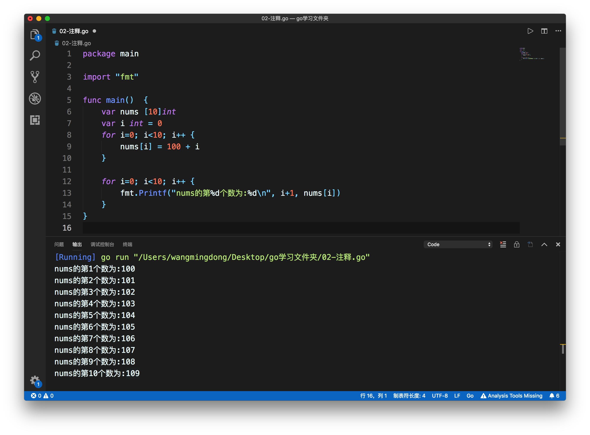
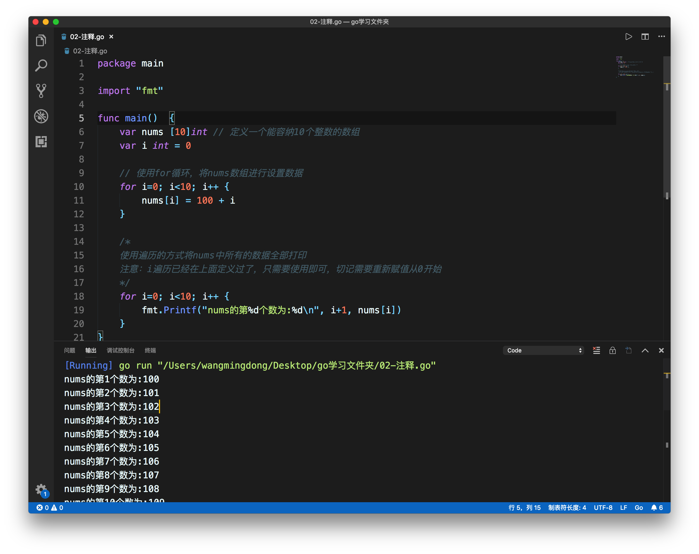
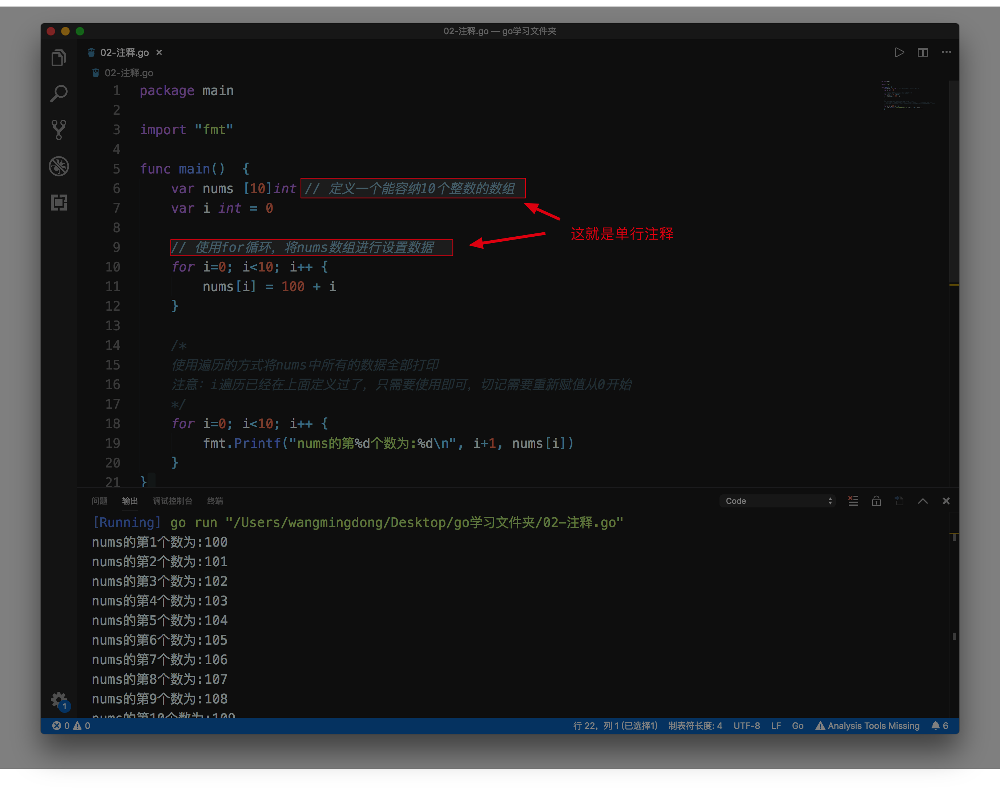
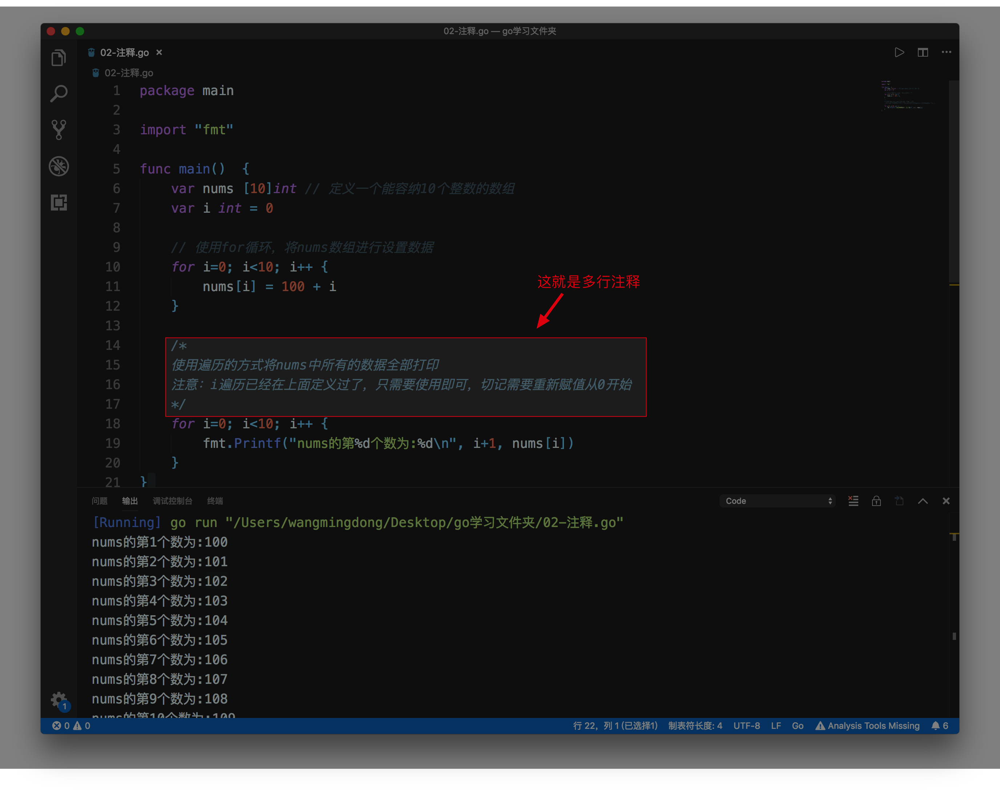

注释
1. 注释作用
在前面我们已经写过第一个GO程序了，该程序的功能很简单，代码量不是很多，也就是几行代码。但是大家看下面这段代码，代码量比我们写的第一个程序代码量多了很多，代码多了以后，阅读起来非常不容易。

接下来，在看下面的代码，由于在一些代码行上有汉字，所以阅读起来就很方便。

我们通过用自己熟悉的语言（例如，汉语），在程序中对某些代码进行标注说明，这就是注释的作用，能够大大增强程序的可读性。以后，在公司中做开发，其他程序员会经常阅读我们写的代码，当然，我们也会经常阅读别的程序员写的代码，如果代码中加了注释，那么阅读起来就非常容易了。
2：注释分类
2.1 单行注释
所谓单行注释，就是每次给一行代码加注释，你可以在任何地方使用以 // 开头的单行注释。

以//开头，//右边的所有东西当做说明，而不是真正要执行的程序，起辅助说明作用
2.2 多行注释
若果代码量比多，每行加注释，比较麻烦，可以使用多行注释。

除了给代码加上说明，用注释以外，如果你写的代码不想让计算机执行，那么也可以加上注释。
加了注释后代码不会被编译执行，这就是对已有的代码进行注销。
2.3 重点强调
以后写程序要多加注释，这是我们程序猿的专业和职业道德，不加注释就是流氓。